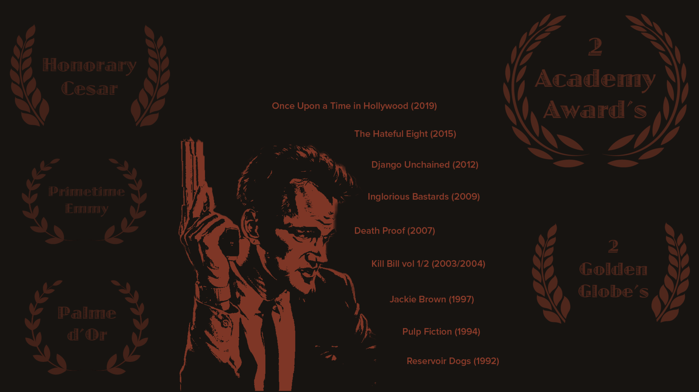

Inspired by the team at Paravel I decided to copy their "The Many Faces Of" series and make a fanpage of sorts for my favorite director, Quentin Tarantino
I used Adobe Illustrator and Photoshop to edit all the photos, and then built the website from scratch and deployed to heroku.
Designer and Developer
April 2019 - July 2019
HTML, CSS, JavaScript, Photoshop, Illustrator
I created an infographic-esque page to display Tarantino's awards and past films
